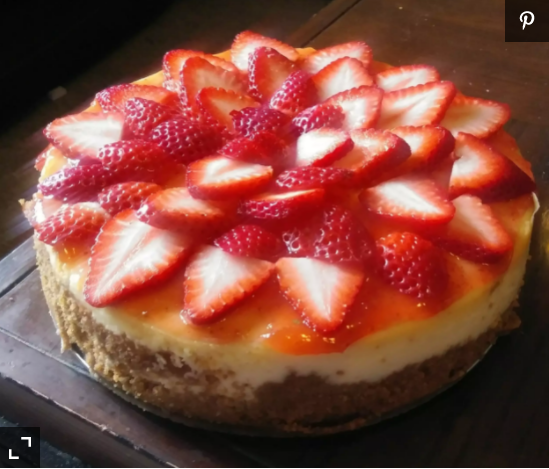

Cheesecake

Description
Cheesecake is a sweet dessert consisting of one or more layers. The main, and thickest, layer consists of a mixture of a soft, fresh cheese (typically cottage cheese, cream cheese or ricotta), eggs, and sugar.
Ingridients of Cheesecake:
- 1 ½ cups graham cracker crumbs
- 3 tablespoons white sugar
- ½ teaspoon ground cinnamon
- ¼ cup margarine
- 3 (8 ounce) packages cream cheese
- 1 ½ cups white sugar
- 4 eggs
- 2 teaspoons vanilla extract
- ¼ teaspoon salt
- 2 cups sour cream
Steps to prepare it:
- cracker crumbs, 3 tablespoons sugar, cinnamon and melted margarine. Mix all ingredients well and press into bottom and sides of a 9 inch springform pan.
- In a large bowl, beat cream cheese and sugar until smooth. Blend in the eggs one at a time, then stir in the vanilla and salt. Fold in the sour cream.
- Pour batter into springform pan. Bake in preheated oven for 1 hour. Turn off oven and leave cake in for at least 30 minutes.